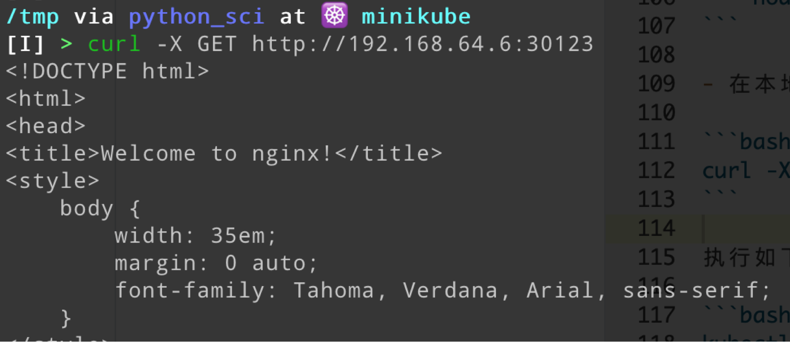

本节会在本地搭建一个Docker镜像私服，提升本地Kubernetes创建 Pod 时拉取镜像的速度
Docker设置私有仓库并使用
准备
为了提升镜像拉取速度，可以在本地创建一个私有的Docker镜像源。Docker官方提供了快速搭建镜像仓库的工具 docker-registry 。详细的使用教程点此 私有仓库。下面摘录自己本地操作的命令，本机ip为 192.168.43.205 ，提供给仓库使用的端口为 5000 ，以nginx为例，实验环境为MacOS，Docker版本为19.03，Kubernetes使用环境为单节点的Minikube
- 拉取java镜像至本地
1 | docker pull nginx:alpine |
- 为其打上tag，准备上传私有仓库
1 | docker tag nginx:alpine 192.168.43.205:5000/nginx:alpine |
- 拉取docker-registry镜像并启动仓库
1 | docker run -d -p 5000:5000 --restart=always --name registry registry |
- 配置Docker，使用http来传输
由于我使用的是Docker Desktop，所以只要在insecure registries加入registry的地址和端口即可。Linux操作系统需要在 /etc/docker/daemon.json 写入如下的内容
1 | { "insecure-registries":["192.168.43.205:5000"] } |
之后重启
1 | sudo service docker restart |
- (根据Kubernetes类型而定)配置minikube中的docker
配置 $HOME/.minikube/machines/minikube/ 下的文件 config.json 即可，找到 HostOptions.EngineOptions.InsecureRegistry，向这个数组中加入本机IP，重启minikube即可
提交
提交此镜像至私服
1 | docker push 192.168.43.205:5000/nginx:alpine |
使用私有镜像创建k8s资源
使用k8s创建2个nginx实例以及一个service暴露服务，由于全部都是在一台机器上，所以暴露的ip就写本机IP。
注意这里的镜像写的是私有仓库的镜像
- 创建Nginx
1 | apiVersion: apps/v1 |
- 创建并暴露服务
1 | apiVersion: v1 |
- 在本地执行命令查看结果
1 | curl -X GET http://192.168.64.6:30123 |

执行如下的命令查看pod、service运行情况
1 | kubectl get services nginx-demo |